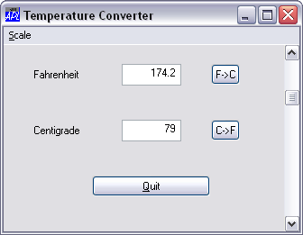

It would also be helpful if you could use the scrollbar to calculate in the reverse direction, from Fahrenheit to Centigrade. Let's add this facility, and give you the ability to choose to which scale the scrollbar applies through a menu.
To create a menu structure in a bar along the top of a Form (as opposed to a floating or pop-up menu) we first need to create a MenuBar object. This type of object has very few properties, and we need only specify its name, 'TEMP.MB'.
'TEMP.MB' ⎕WC 'MenuBar'
Notice that, at this stage, there is no change in the appearance of the Form.
Then we can add a menu with the Caption 'Scale'. The name of the menu is 'TEMP.MB.M'. Adding the first menu causes the MenuBar to become visible.
'TEMP.MB.M' ⎕WC 'Menu' '&Scale'

Note that the ampersand (&) allows the user to select the menu quickly by pressing "Alt+S".
Now we can add the two options to the menu. Note that the MenuBar and Menu objects do not represent final choices, they merely specify a path to a choice which is represented by the MenuItem object. When either of these is chosen, we want to execute a callback function that will make the necessary changes to the scrollbar. The statements to create each of these MenuItems are broken into 3 only to fit them onto the page.
First we create the Centigrade MenuItem...
C←'MenuItem' '&Centigrade'
C,←('Checked' 1)('Event' 'Select' 'SET_C')
'TEMP.MB.M.C' ⎕WC CSetting the Checked property to 1 will cause a tick mark to appear against this option, indicating that it is the current one in force.
Then the Fahrenheit MenuItem...
F←'MenuItem' '&Fahrenheit'
F,←('Checked' 0)('Event' 'Select' 'SET_F')
'TEMP.MB.M.F' ⎕WC FNotice that as the default value of Checked is 0, we didn't really have to set it explicitly for Fahrenheit. Nevertheless, it will do no harm to do so, and improves clarity.
The SET_C callback function is defined as follows:
∇ SET_C [1] ⍝ Sets the scrollbar to work in Centigrade [2] TEMP.S.Range←101 [3] TEMP.S.onScroll←'C2F' [4] TEMP.MB.M.C.Checked←1 [5] TEMP.MB.M.F.Checked←0 ∇
Line [2] simply sets the Range property of the scrollbar to be 101, and line [3] makes C2F the callback function when the scrollbar is moved. Lines [4] and [5] ensure that the tick mark is set on the chosen option.
The SET_F function is very similar...
∇ SET_F [1] ⍝ Sets the scrollbar to work in Fahrenheit [2] TEMP.S.Range←213 [3] TEMP.S.onScroll←'F2C' [4] TEMP.MB.M.F.Checked ← 1 [5] TEMP.MB.M.C.Checked ← 0 ∇
and of course we need F2C to make the scrollbar work in Fahrenheit.
∇ F2C Msg;C;F [1] ⍝ Callback for Fahrenheit input via scrollbar [2] TEMP.F.Value←213-4⊃Msg [3] TEMP.C.Value←(TEMP.F.Value-32)×5÷9 ∇